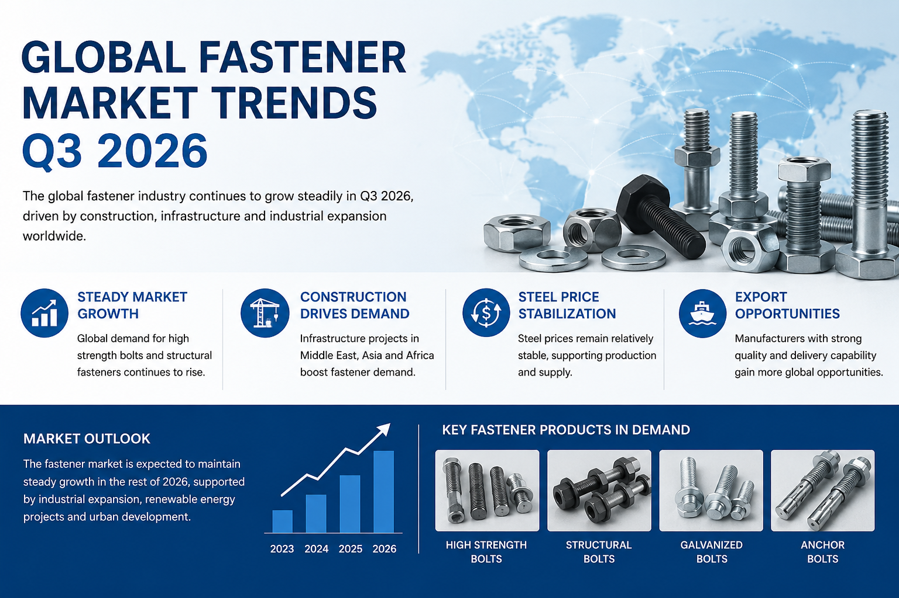
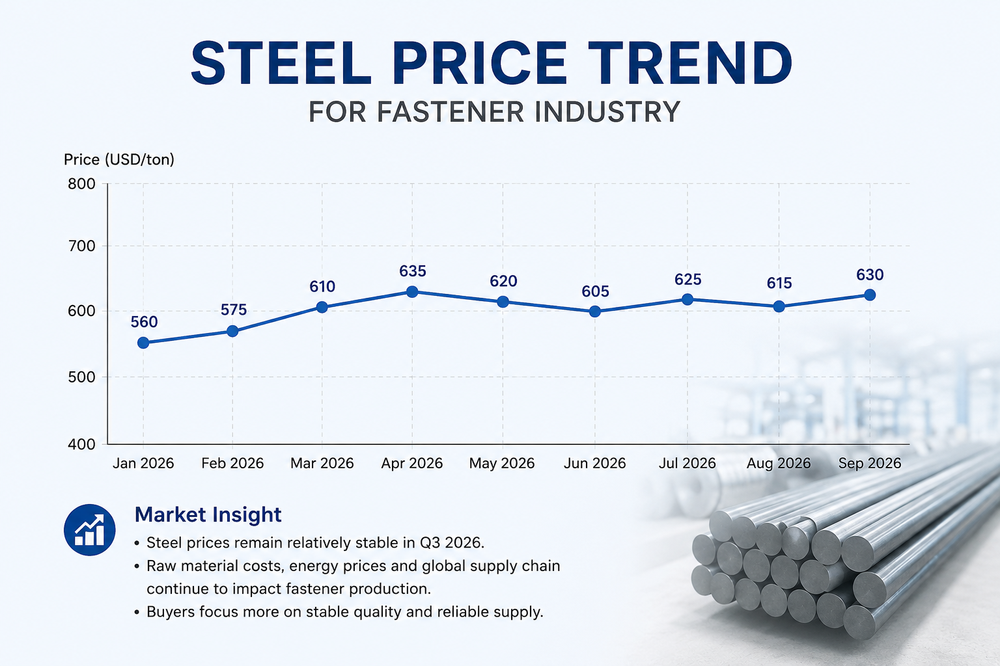
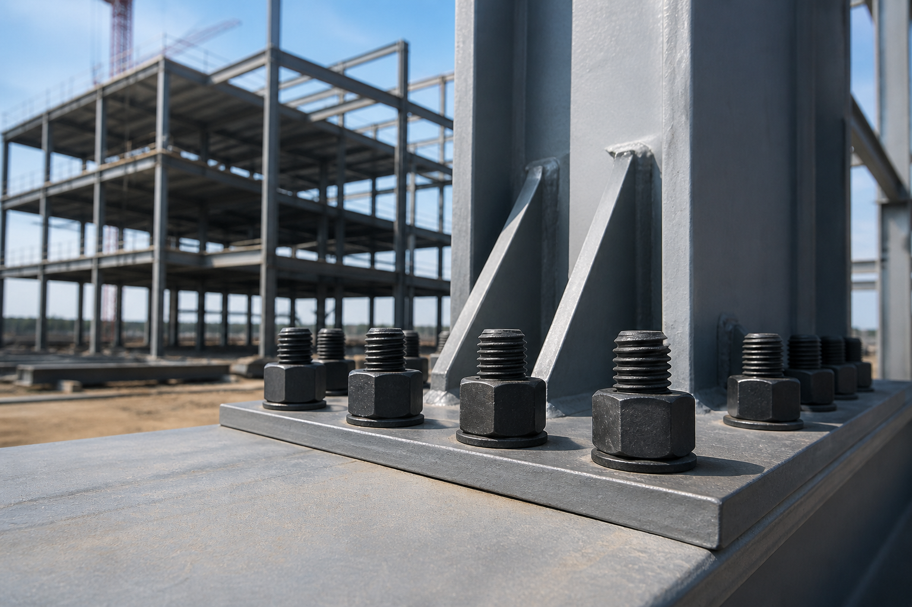

L'industrie mondiale de la fixation a continué de montrer une croissance stable au T3 2026. La demande de boulons à haute résistance, de fixations structurelles et de boulons de construction galvanisés a augmenté dans les projets d'infrastructure, de structure en acier et industriels.

Les Prix de l'Acier Restent un Facteur Clé du Marché
Les prix des matières premières en acier sont restés relativement stables par rapport aux fluctuations antérieures de 2026. Cependant, les fabricants sont toujours confrontés à la pression des coûts de transport, des prix de l'énergie et des ajustements de la chaîne d'approvisionnement mondiale.
Les acheteurs accordent une attention accrue à la stabilité des fournisseurs, à la capacité de production des usines et à la rapidité de livraison lors de la sélection des fabricants de fixations.

Les Projets de Construction au Moyen-Orient Stimulent la Demande
Les projets d'infrastructure et de construction à grande échelle en Arabie Saoudite, aux Émirats Arabes Unis et au Qatar continuent d'augmenter la demande de boulons structurels, de boulons hexagonaux lourds et de fixations galvanisées à chaud.
- Boulons à haute résistance Grade 8.8 / 10.9 / 12.9
- Boulons structurels en acier
- Boulons hexagonaux DIN933 et DIN931
- Boulons galvanisés à chaud
- Boulons d'ancrage pour projets de construction

Opportunités d'Exportation pour les Fabricants de Fixations
Les fournisseurs de fixations disposant d'une capacité de production stable, d'une expérience en exportation et d'un contrôle de qualité strict gagnent davantage d'opportunités sur les marchés internationaux.
Les acheteurs recherchent de plus en plus :
- Fabricants de boulons hexagonaux
- Fournisseurs de boulons à haute résistance
- Usines de boulons structurels
- Fabricants de boulons en Chine
- Fournisseurs de fixations de construction
Perspectives d'Avenir
Le marché mondial de la fixation devrait maintenir une croissance stable jusqu'à la fin de 2026. Les investissements dans les infrastructures, les projets d'énergie renouvelable et l'expansion industrielle continueront de stimuler la demande de solutions de fixation de haute qualité dans le monde entier.
Les fabricants qui se concentrent sur la qualité des produits, des prix compétitifs et une livraison rapide resteront très compétitifs sur les marchés d'exportation mondiaux.